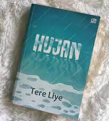

<html lang="id">
<head>
<meta charset="UTF-8">
<meta name="viewport" content="width-device-width"
initial-scale="1.0">
<title>Bedah Buku: Negeri 5 Menara</title>
<link rel="stylesheet" href="style.css" />
</head>
</html>
<body>
<header>
<h1>Freya Bookstore</h1>
<nav>
<a href="index.html">Beranda</a>
<a href="produk.html">Produk</a>
<a href="Bedah-Buku.html">Bedah buku</a>
<a href="testimoni.html">Testimoni</a>
<a href="tampil-testimoni.html">Testimoni Pembeli</a>
</nav>
</header>
<main class="artikel">
<h2>Bedah Buku: Negeri 5 Menara</h2>
<p class="penulis">Ditulis oleh  : Ahmad Faudi</p>


<p> 
Buku ini menceritakan perjalanan Alif, seorang anak Minang yang menempuh pendidikan di pondok pesantren Madani. Awalnya penuh keraguan, namun perlahan Alif menemukan makna perjuangan, persahabatan, dan kekuatan impian.
</p>
<blockquote>
"Man Jadda Wajada - Siapa yang bersungguh-sungguh, dia akan berhasil."
</blockquote>
<p>
Kalimat itu semangat utama dalam buku ini. Kisah ini yang ditulis berdasarkan pengalaman nyata ini sangat menginspirasi, terutama bagi pelajar yang sedang mengejar mimpi mereka. Penulis berhasil menyampaikan pesan-pesan moral melalu narasi yang hidup.
</p>
<p>
Buku ini cocok dibaca oleh remaja dan orang dewasa yang sedang mencari motivasi hidup. Cerita persahabatan, perjuangan, dan cinta belajar membuatnya menyentuh dan relevan bagi pembaca diberbagai usia.
</p>
<header>
<main class="artikel">
<h2>Bedah Buku : Hujan</h2>
<p class="penulis">Ditulis oleh : Tere Liye</p>


<p>
Bercerita tentang Lail, seorang gadis yang hidup di masa depan penuh bencana alam besar yang menghancurkan banyak kehidupan dan memaksa manusia bertahan hidup dalam kondisi sulit; setelah ia kehilangan orang tuanya akibat letusan gunung dan gempa, Lail diselamatkan oleh Esok, seorang pemuda yang kemudian menjadi sahabat dan teman hidupnya dalam situasi pengungsian dan perjuangan bersama, namun seiring waktu keadaan memisahkan mereka dan Lail harus menghadapi perasaan cinta, kehilangan, harapan, serta pilihan sulit untuk melanjutkan hidupnya di dunia yang terus berubah di tengah kemajuan teknologi dan tantangan masa depan.
</p>
<blockquote>
“Jangan pernah jatuh cinta saat hujan. Karena ketika besok lusa kamu patah hati, setiap kali hujan turun, kamu akan terkenang dengan kejadian menyakitkan itu.”
</blockquote>
<p>
Kalimat ini sebenarnya bukan berarti hujan itu buruk, melainkan bahwa hujan bisa memicu memori dan perasaan lama ketika seseorang pernah mengalami hal emosional di bawah hujan. Jadi jika seseorang jatuh cinta dalam suasana hujan dan kemudian hubungan itu berakhir menyakitkan, setiap hujan di masa depan bisa membuatnya kembali mengingat perasaan sakit itu — seolah hujan menjadi ‘pemicu kenangan’.
</p>
<p>
Novel Hujan karya Tere Liye cocok dibaca oleh kalangan remaja, terutama mereka yang suka cerita tentang persahabatan, cinta, perpisahan, dan perjuangan hidup karena tema‑tema ini banyak muncul dalam alur ceritanya dan bisa menggugah emosi serta pemikiran pembaca seusia mereka; gaya bahasa yang digunakan pun relatif mudah dipahami sehingga remaja dapat mengikuti cerita tanpa kesulitan, namun pembaca dewasa yang menikmati kisah emosional dan reflektif juga bisa menikmati novel ini.
</p>
</header>